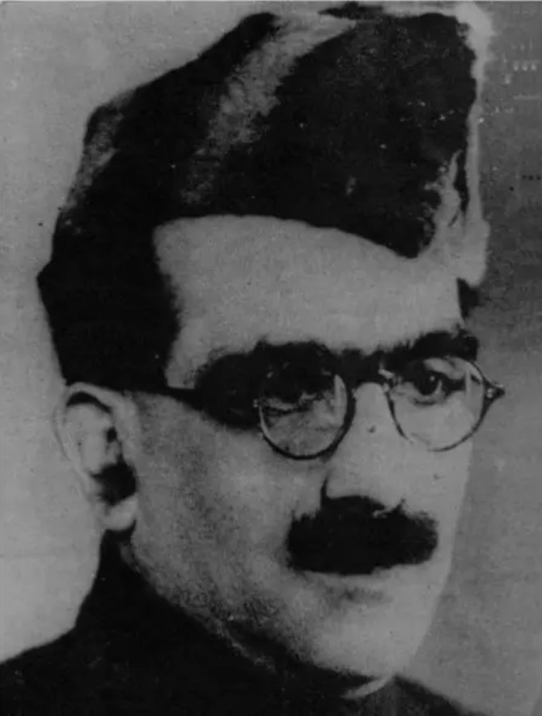

Bhagwati Charan Vohra: The Pen Behind the HSRA Who Died Testing a Bomb

Portrait: Wikimedia Commons, public domain
Bhagwati Charan Vohra was born on 15 November 1903 in Lahore, the son of Shiv Charan Vohra, a senior railway officer who had been given the title of Rai Bahadur by the British in 1919. The son of a loyalist turned his back on that world. He studied at F.C. College, passed his intermediate in science in 1921, and then joined National College, Lahore, the institution Lala Lajpat Rai had founded for students shut out of government colleges. He married Durgawati Devi of Allahabad, and their son Sachindra was born in December 1925.
Vohra was never just a man of action. He was the ideologue, organiser, and orator of the revolutionary movement in Punjab. On 6 April 1928 he and Bhagat Singh drafted the manifesto of the Naujawan Bharat Sabha, giving young Indians the triple motto of "service, suffering, sacrifice." When the revolutionaries met at Ferozshah Kotla in Delhi in September 1928 and reorganised the Hindustan Republican Association into the Hindustan Socialist Republican Association under Chandrashekhar Azad, Vohra was made propaganda secretary and wrote the HSRA manifesto that was distributed widely during the Lahore session of the Congress.
He was party to the major actions of those years: the killing of J.P. Saunders, the throwing of bombs in the Central Assembly Hall by Bhagat Singh and Batukeshwar Dutt. In 1929 he rented Room No. 69 of Kashmir Building, Lahore, and turned it into a bomb factory. He planned and carried out the bomb attack on the train carrying Viceroy Lord Irwin on the Delhi-Agra line on 23 December 1929. Irwin escaped unhurt, and Gandhi condemned the act in his article "The Cult of the Bomb." In consultation with Azad, Vohra wrote the reply: "The Philosophy of the Bomb," urging India's youth to join the struggle. Its closing words declared that the movement asked for no mercy and gave no quarter, a war to the end, to victory or death.
What set Vohra apart was his invisibility. He was involved in revolutionary activity from the Kakori period through the Lahore conspiracy, yet he was never once caught by the police and never sentenced by any court. He deliberately avoided the limelight, so thoroughly that his writings were sometimes taken for Bhagat Singh's own.
It cost him his life. After Bhagat Singh's arrest, Azad and Vohra planned to free the undertrials from Lahore Central Jail, an attack that needed more powerful bombs. On 28 May 1930, on the banks of the river Ravi near Lahore, Vohra was testing one of those bombs when it exploded in his hands. He was 26. His comrades, fearing British attention, did not bring his body home. He was not cremated with ritual; his wife was not allowed a last glimpse. A few friends buried him quietly in a deserted place.
Bhagat Singh, hearing of it, wrote that their own sacrifices would be only a link in the chain whose beauty had been enhanced by the proud self-sacrifice of Comrade Bhagwati Charan Vohra. Azad said he felt as though his right hand were gone.
Vohra is forgotten precisely because of how he lived and died: no arrest, no trial, no famous last statement on a scaffold, no funeral procession for the nation to remember. He wrote the words of the revolution and died testing its weapons, and the history books, which reward the dramatic and the visible, gave him a paragraph while his friend Bhagat Singh got a legend.
Source: Wikipedia, Alchetron, RajneetiPlus
Visuals: Archival portrait
Follow the daily five-post slate on Instagram.
Follow on Instagram